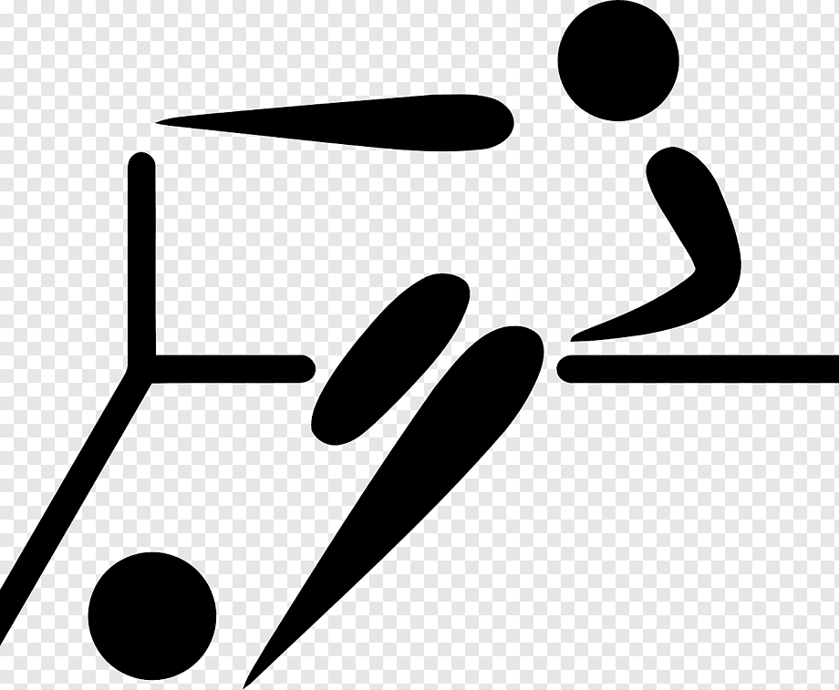
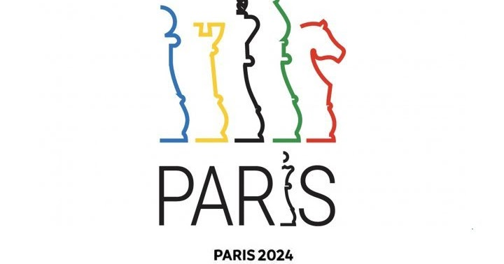
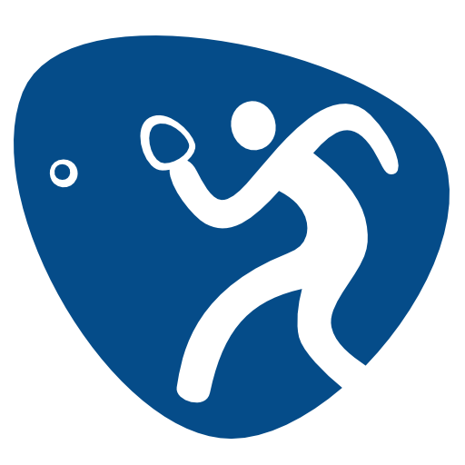

Vôlei
O vôlei é um esporte jogado por duas equipes, cada uma composta por seis jogadores. O objetivo é marcar pontos batendo a bola sobre a rede e impedir que a bola toque o chão do seu lado da quadra.
Futsal
O futsal é uma variação do futebol jogado em quadras menores. As regras são semelhantes às do futebol de campo, mas é jogado com cinco jogadores em cada equipe, incluindo o goleiro.
Xadrez
O xadrez é um jogo de tabuleiro de estratégia em que dois jogadores competem para capturar o rei do oponente. Cada jogador possui peças distintas que se movem de acordo com regras específicas.
Tênis de Mesa
O tênis de mesa, também conhecido como pingue-pongue, é um esporte em que os jogadores batem uma bola de leve para frente e para trás em uma mesa dividida por uma rede. É jogado com raquetes e uma pequena bola.